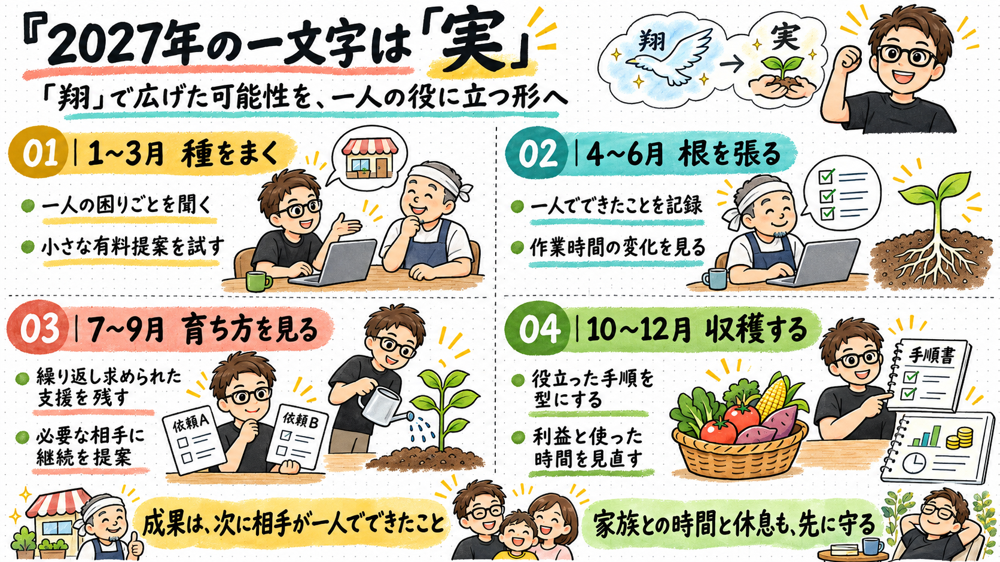

THOUGHT DEBUG /
2027年の一文字は「実」。広げた可能性を、一人の役に立つ形へ
2026年の「翔」は、可能性を広げること。2027年の「実」は、その中から一つ選び、誰かが使える形にすること。
「実力」と「実感」を、両方残す
2027年の一文字として、「実」という提案があった。実る、実現、実力、実直、実感。なかでも気になったのは、積み重ねた力を誰かの役に立てる「実力」と、自分の時間も大切にできたと思える「実感」だ。売上が伸びても、家族との時間や余裕がなくなれば、僕にとっては片方しか実っていない。
数秘術の「8」は、成果や責任について考えるきっかけとして受け取る。収入や出来事を予測する数字ではない。何を選び、何を続けるかは、自分で決める。
AIを教えた量より、相手が一人でできたこと
柱の候補はAI導入サポート。リハビリの現場で培ってきた、相手がどこでつまずくかを見て、できる動作を少しずつ増やす視点を活かしたい。AIに詳しい人になることより、目の前の一人が、僕のいない次の一回も自分で仕事を進められることを成果にしたい。
最初の一歩は、身近な一人に「繰り返し作業で、何に一番時間がかかっていますか」と聞くこと。試すなら、個人情報や患者情報を含まない作業を一つ選び、職場のルールを確認する。次はその人だけで再現できたか、どこで止まったかを聞く。
一年の計画は、結果を見ながら育てる
- 1〜3月｜種をまく。 対象を絞り、一つの困りごとに小さな有料提案を試す。
- 4〜6月｜根を張る。 相手の声を聞き、作業時間や一人で進められた範囲を記録する。
- 7〜9月｜育ち方を見る。 得意な依頼を絞り、繰り返し求められた支援だけを継続提案にする。
- 10〜12月｜収穫する。 利益と使った時間を見直し、繰り返し役立った手順を教材や仕組みに残す。
「導入事例3つ、継続契約モデル1つ」は目安。単発で役に立てた証拠をつくってから継続支援へ進み、繰り返し使える部分を型にする。家族との時間や休息は、仕事が片付いたら取るのではなく、先に予定に入れておきたい。
思考のデバッガーからの突っ込み
「一つの事業を育てる」と言いながら、診断・研修・月額支援・教材をいっぺんに始めたら、種まきというより、いきなり直売所の開店準備だ。相手が欲しいと確かめるまでは、サービス名や仕組みを増やすより、一人が自力でできたことを一つ残すほうがいい。
一段深掘りする問い
2027年末、売上が伸びても「これは実らなかった」と感じるのは、誰のどんな変化や、どんな時間を失ったときだろう？ それを守るために、今から何を増やさないと決める？
図解

他者紹介用メモ
やりたいことが増えた先で、あなたなら何を一つ育てますか。2027年の一文字を「実」として、AIを教えた量ではなく、相手が次に一人でできたことを成果に置いてみました。仕事を育てながら、家族との時間や自分の余裕も残す。年末に何を手に入れたいかと、何を増やさないかを、一緒に考えるきっかけにどうぞ。